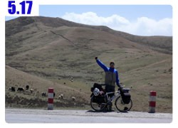
鬧鐘沒有叫，但是生理時鐘會在五點四十左右讓我睜開眼睛，不論我睡飽了沒有。
好幾次一醒來看到手錶的時間都是五點四十幾分，有一種被詛咒的感覺/_\
想要睡久一點都不行，和溫暖的棉被相比，清晨外頭的天氣為什麼越來越冷？
旅館家裡的兩個小朋友，在六點二十的時候就揹著書包去上學了，比我還早出發，真令人敬佩。
出發後沒多久，開始肚子餓，因為早餐還沒解決麻～
可是連續經過好幾個小村莊，都沒有早餐店讓我吃熱食，所以就找了一間雜貨店開始買零食。
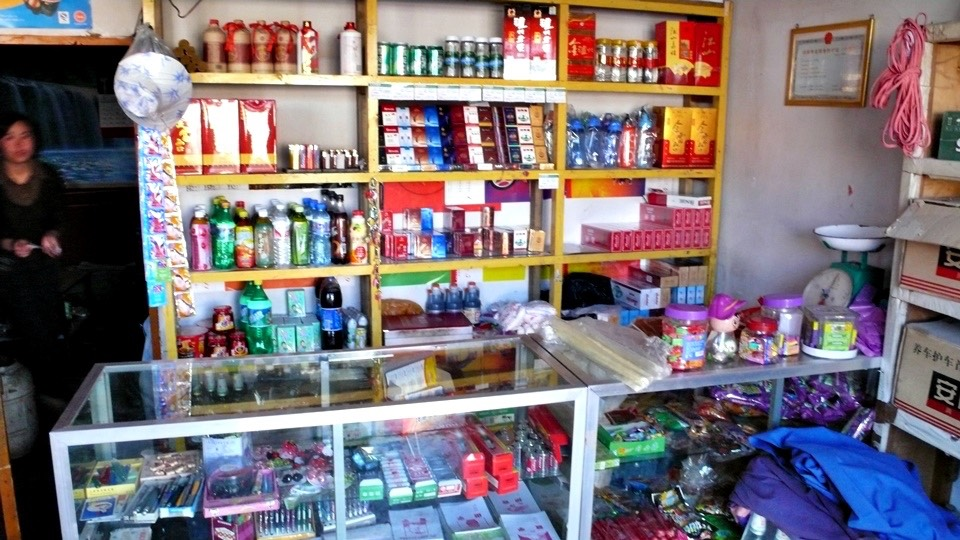
共計買了三支大根的熱狗、兩個甜口味的大餅，和一毛的餅乾二十包，總共才六塊而已。
人民幣真是很方便的貨幣，雖然和其他貨幣一樣是錢，但是總覺得它的實用性很高。
配著開水把甜甜的大餅吃到肚子裡，再吃一條熱狗，早餐就這麼解決了。
今天的路其實蠻艱辛的，雖然說烏鞘嶺的兩千七百公尺才是主要目標，
可是從一離開永登開始，就是爬坡的路，從海拔一千七開始慢慢往上爬，
等騎了六十幾公里，海拔已經接近兩千五百公尺，這時候要爬烏鞘嶺只是輕輕鬆鬆的兩百公尺上坡罷了。
由於路上除了我之外幾乎沒什麼車子，所以就很開心的拿出腳架開始玩定時自拍。
多謝Bianca在出發前給我一個章魚三腳架，想要自拍照片的話很好用！
只可惜腳架跟相機都要放在地上，視點很低，但這樣也別有風味就是了。
雖然要一邊顧著小多，一邊喬相機取景，之後還要自己跑進去入鏡，是很繁雜的作業，可是看到照片就很開心:D
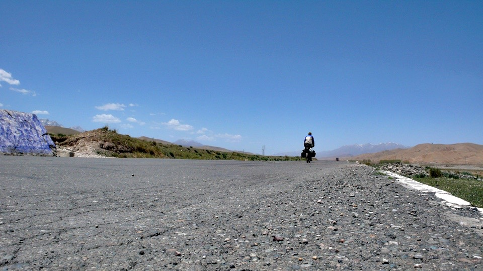
一路上平均分攤爬坡之下，反而變成每一段路都是在爬坡，只是烏鞘嶺特別陡，而且逆風特別大罷了。
說到逆風，今天風向很不給面子，從出發到落腳，一百七十幾公里，居然吹了一整天的逆風，
相較於太陽的涼快，整天的溫度都在22度左右，風真的非常機車，
我試著和它講道理，跟它碎碎唸的抱怨，甚至恐嚇它，逆風依然故我。
由於風很大的關係，連帶影響居然是遮陽帽無法使用。
要是將遮陽帽打開戴著，那它就會不停的被風吹飛走，我就要停下來回頭去撿，很麻煩。
要是將遮陽帽蓋起來戴著，逆風就會將帽子緊緊的吹壓在我的臉上，壓迫著眼鏡和臉，非常不舒服。
所以只好將遮陽帽掛在把手的部分，防曬油塗多一點來彌補。
可能是因為空氣越來越乾燥的緣故，嘴唇越來越乾裂，要不斷補充護唇膏和喝水，
更可憐的是鼻子，每次擤鼻涕的時候，都會噴出鼻血來，不是用流的喔，而且這時候打噴嚏的話就會有血霧。
一開始看到沾滿血跡的衛生紙，還有點驚慌是不是小飛蟲在我的鼻子裡面築巢了。
後來漸漸發現是因為空氣乾得很可怕的關係，所以敏感的鼻子就首當其衝。
有時候我會塗一點小護士在鼻孔裡(很清涼，小朋友不要輕易嘗試，請由家長陪同)，這樣多少有保濕的效果。
路上看到一個小耳朵，一開始以為是天線，拿來看電視用的。
仔細一看才發現上面貼滿的鏡子，這是用太陽能來煮開水的能源裝置(有讓開水煮滾的哪一天嗎~_~)
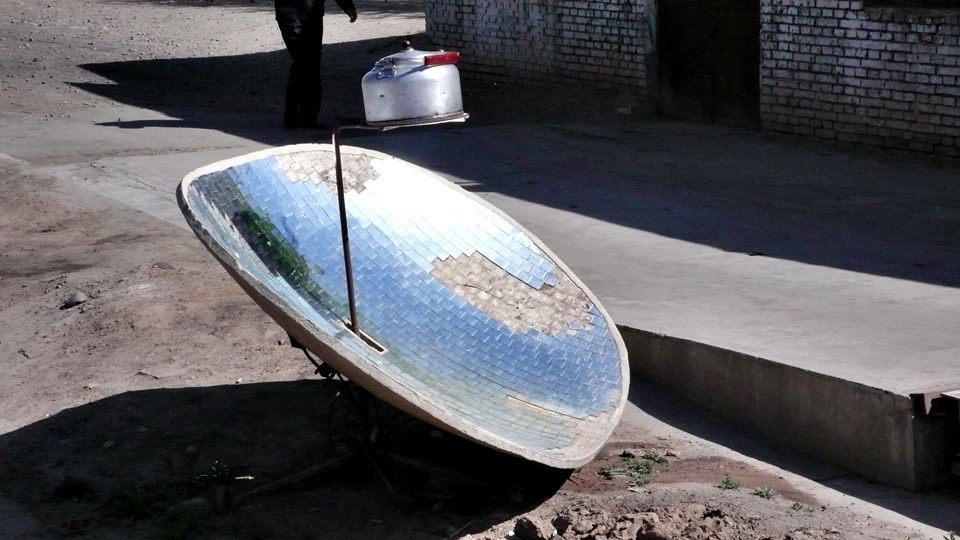
農作物的高度都很矮，像稻子、小麥那種會長高的已經快看不見了，
取而代之的都是長在地上，像綠色地毯一樣的不明農作物，大家都騎著單車去田裡工作。
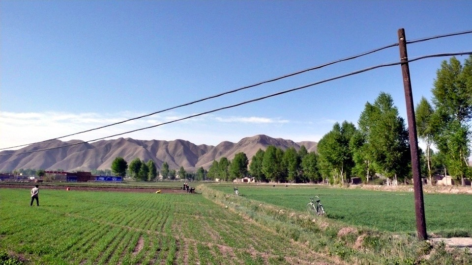
決定走舊的312國道之後，雖然不走新的路，但是新的路卻幫了我很大的忙。
所有的大卡車都跑去新的312國道了，今天從離開永登開始，耳根就非常的清靜～
騎在沒有大卡車的路上，真是一種超優的享受，就是算上坡也變得甜美。
往烏鞘嶺的路上，先經過了『天祝』，名字很美，這裡是藏族的自治縣。
路上的標誌牌除了中文之外也標示了藏族的文字，中午就在天祝這邊吃午餐。
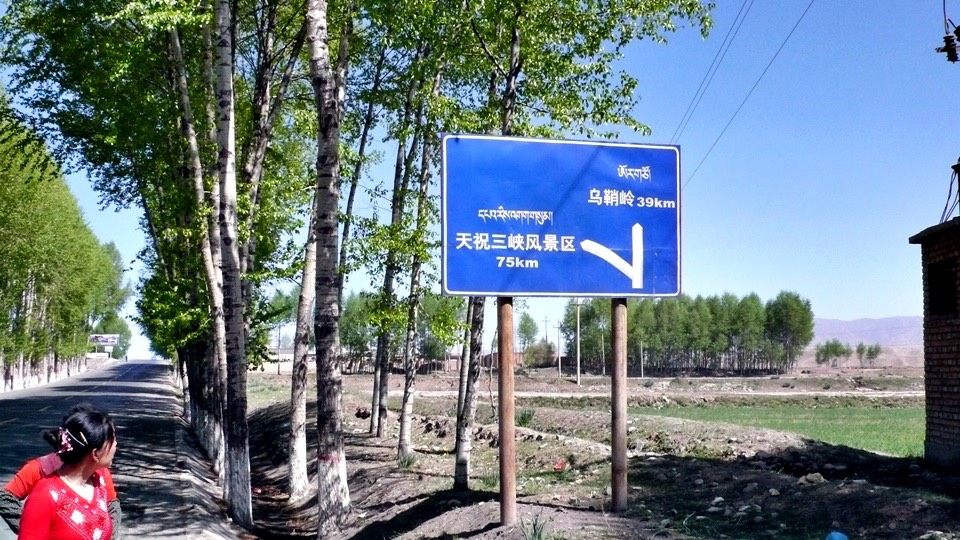
本來想找藏族的食物吃，像是油酥茶這些只有聽過卻從來沒喝過的食物。
可是怎麼也找不到藏族餐廳，所以又跑去清真餐廳，反正不要吃牛肉麵就對了，
那就點了一碗羊肉麵皮，由美味的炒羊肉配上麵皮所搭配而成的乾麵。
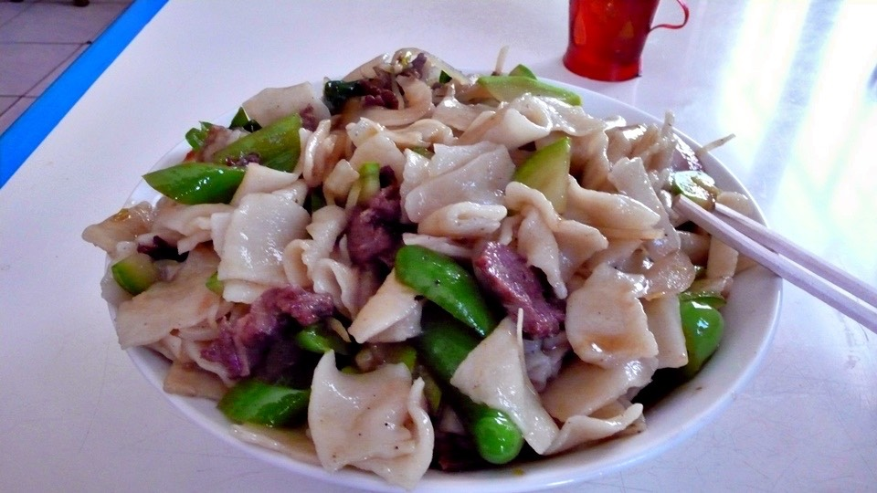
每到一間餐廳的時候，我都會先點餐，然後拿一張板凳坐在店門口陪著小多，以防奇怪的人來亂碰，
而且店門口總是風最大，最涼快的地方，坐在這裡很舒服。
等我點的食物好了，就繼續坐在外頭吃，一開始還有點彆扭，後來不坐在外面看著小多，反而不能安心的吃飯。
(不論點什麼菜都是現做，點麵就現擀，所以都要等大概十五分鐘。)
因為我整天幾乎都在騎車，偶爾才會停下來拍張照或是喝口水。
所以當地人要和我聊天的話，就是在中午吃飯的時候，單車跟我成了店裡的最佳招牌。
什麼路過的、店裡用餐的、甚至別家店的廚師都會放下工作，趁我吃飯的時候跑過來串門子。
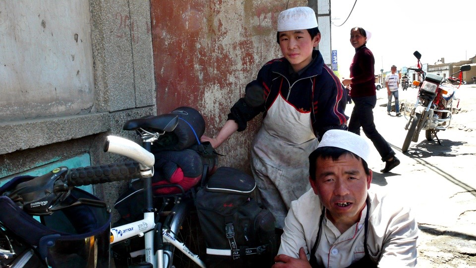
過了那麼多天，總結可以歸類出幾個FAQ的問題如下：
你從哪裡出發呀？
你老家在哪裡呀？
你要去哪裡？
你家有幾口人？
這車多少錢買的？
就你一個人嗎？
一天可以騎多少里路？
出發到這騎多久啦？
這些FAQ的問題，現在都可以不需要思考，直接靠反射作用回答。
吃完飯找給我一張兩塊錢的紙鈔，這是我第一次拿到的幣值，而且上面不再是毛澤東了。
小毛占據了從一塊到一百塊所有幣值的圖案，但充滿當地的特色的這一張不是更漂亮嗎？
因為人民幣都是非常非常普通的紙鈔，流動量又頻繁，所以破破爛爛是正常的。
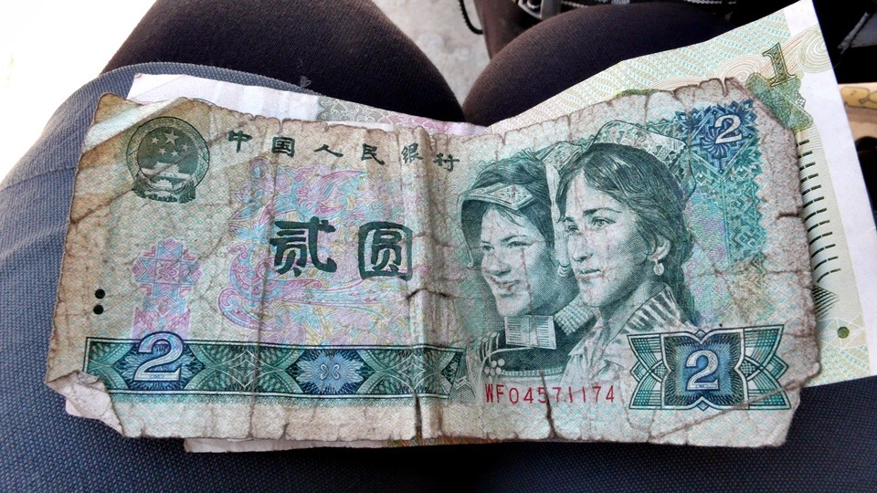
在天祝縣，女生都用頭巾把頭髮包起來，有的連臉都整個包覆住。
不知道是什麼習俗還是只是為了擋太陽，一路上施工修修補補是難免的，但是非常反常的，都是女生在做吃力的工作。

伴隨著22度的涼爽天氣，即使是日正當中的烈日當頭，依然不覺得熱，
在這樣的舒服天氣下，慢慢的就騎到了烏鞘嶺的山腳。
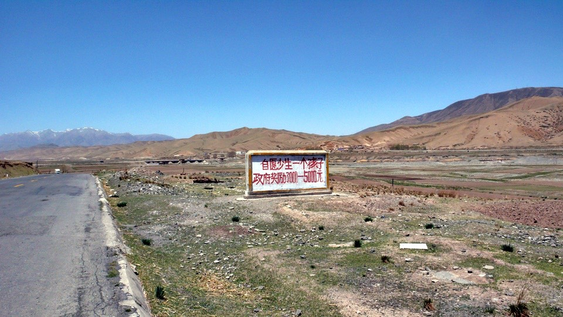
入口沒有說這個就是烏鞘嶺，只是突然之間路變得很陡，逆風變得很強。
或許不需要道路指示牌，天然的屏障就是烏鞘嶺最好的說明。
從這邊看到更高的山頭，依然還有白色未融化的雪和冰，都已經是五月下旬了，還能看到雪真是不可思議。
從永登出發，一直到抵達武威，中間可以用烏鞘嶺做為分界點。
永登到烏鞘嶺，是上坡路，烏鞘嶺到武威，則是下坡路。兩段路分別都是八十公里左右。
我從早上七點開始騎，中午休息一小時吃飯，居然到下午兩點半才攻上烏鞘嶺orz
而且真的如昨天那位騎摩托車旅行的大叔所說的，逆風加上陡坡，我堅持了一下子之後就乖乖的下車牽著走。
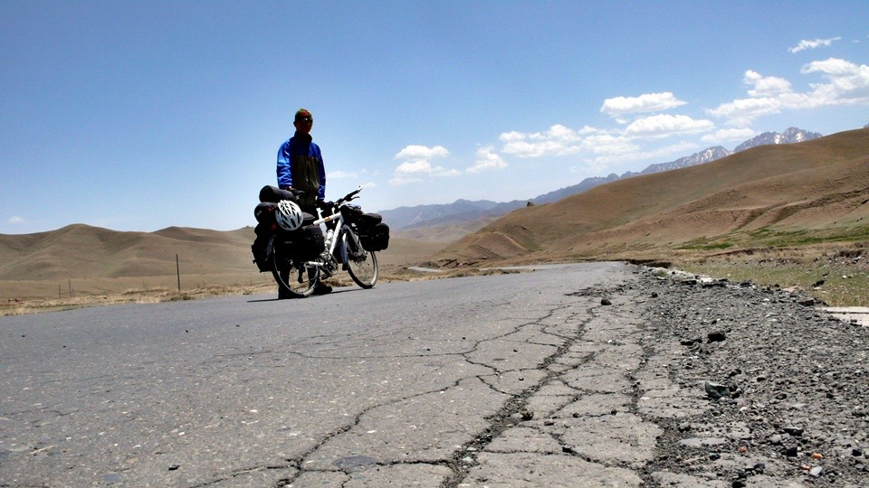
雖然還沒到那個地步，但是漸漸的有沙漠的景觀出現了。
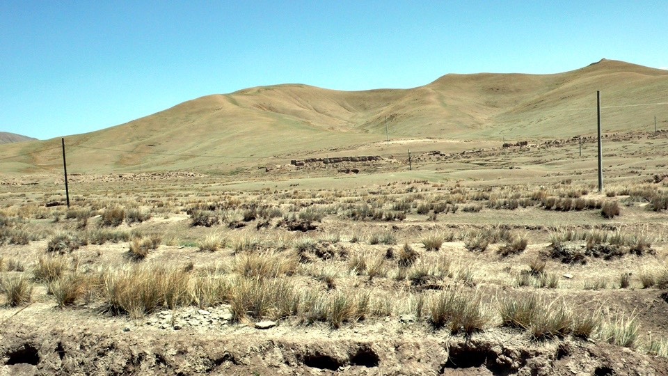
不知道是不是因為這邊是藏族自治區的關係，放牧的羊群變得很多很多。
不像之前看到那種三～五隻的小型放牧，而是動輒就是一百隻以上的綿羊或是奇怪的牛，盤據了整座山頭。
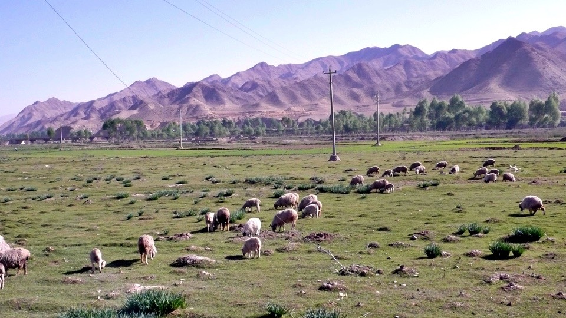
一開始看到興奮得哇哇大叫，結果羊群都被我嚇跑掉了，
在群山之下，伴隨著羊咩咩脖子掛著鈴鐺的咚咚聲，和羊咩咩自己的叫聲，真是一種如詩如畫的風景。
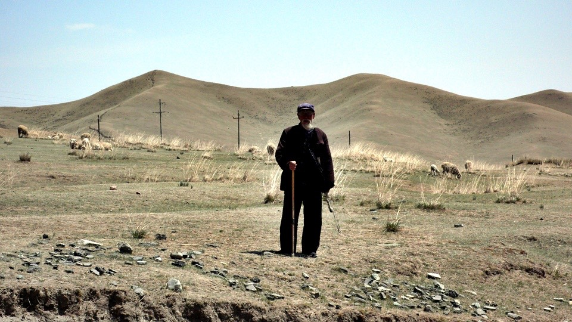
牽著車，一邊數羊一邊往上爬，看到烏鞘嶺的牌子時，手錶的海拔計顯示高度為2704公尺。
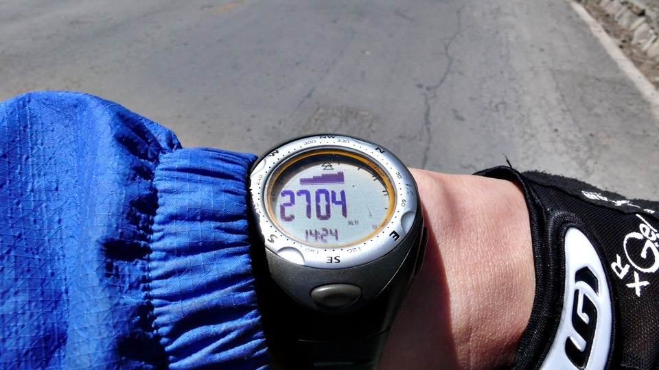
雖然不是說很高的山，可是仍然是這次旅行的最高峰紀錄保持者，
等進入新疆之後，看來這個紀錄很快就會被三～四千公尺的高山無情的打破。
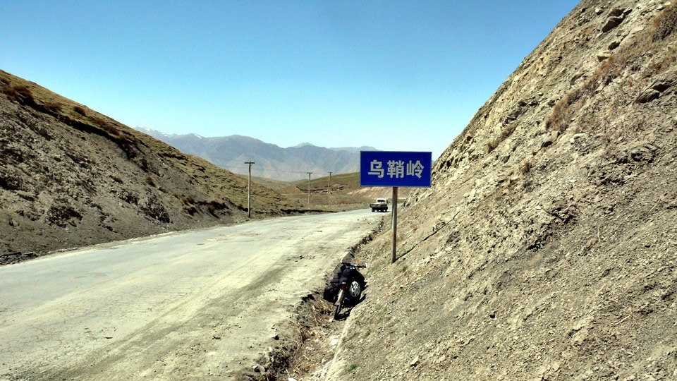
從烏鞘嶺的山頭，到今天的目的地還有91公里，目前則已經下午兩點多，
這樣的時間跟這樣的距離，其實有點勉強，但接下來都是下坡路，而且太陽下山的時間已經接近晚上九點，
所以就算有點辛苦，慢慢的騎今天應該也是可以抵達武威的。
然後就要以兩天一個綠洲城市的速度往烏魯木齊前進。
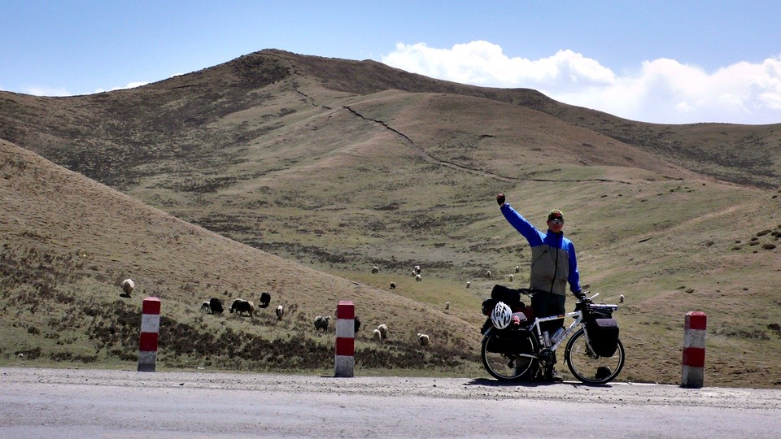
放牧的除了可愛的羊咩咩，還有一種長了很尖的角，很大一支，毛很長，
看起來很兇的(有幾隻就不停的打架)奇怪動物，他們有白色的、黑色的，跟混合顏色的，
因為他們吃草的地方跟我很近很近，又沒有護欄，有點怕會攻擊我的不只是路上的狗而已。~_~
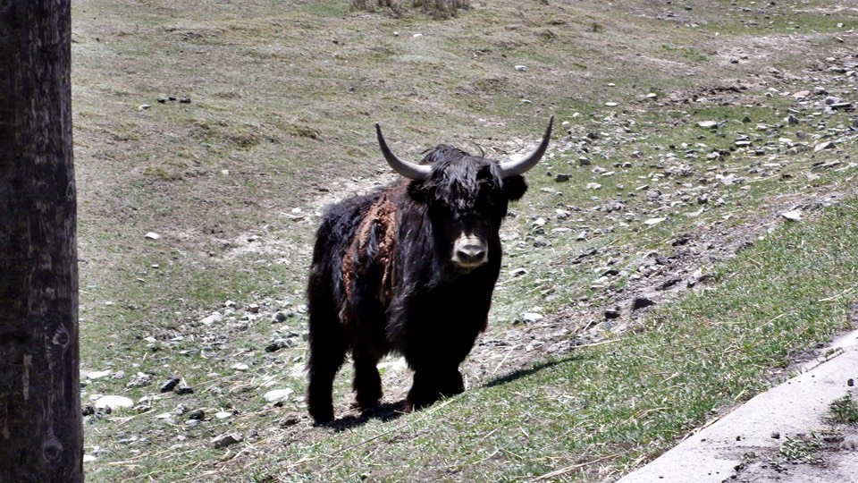
從兩千七百公尺開始往下滑，到武威的時候海拔只剩下一千三百公尺，
足足滑了有一半，非常的過癮，爬坡也非常的有代價。
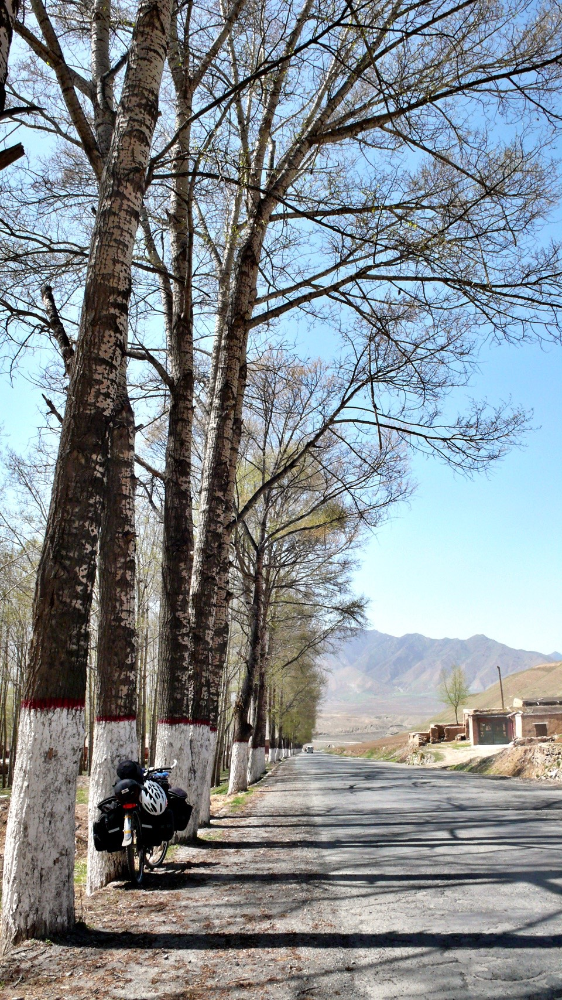
放牧的這些人家，我本來想說他們會不會住在藏族的傳統帳篷裡。
但是後來就看到他們居住的房子，非常的土灰色，看起來就很乾渴的樣子。
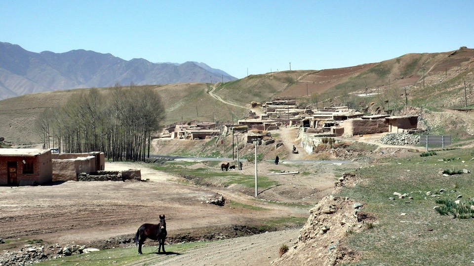
一離開烏鞘嶺的第一個城市就是安遠鎮，從這裡開始展開我今天的吃冰棒生涯。
因為這邊幾乎是騎自行車到烏魯木齊的必經之地，又已經有那麼多人騎自行車走這一趟，
還以為這邊的人都已經見怪不怪，但還是很好奇的打量著我這一身的裝備。
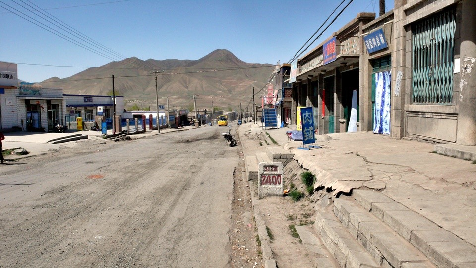
現在變得很膽小，只要我騎到一半停下來休息片刻，而有陌生人試圖靠近我的話，我都會很緊張。
也許他們只是想近一點看看小多，或是想跟我聊兩句，可是只要太靠近我，或是打量得很明顯的，
我都會立刻踩下踏板走人，顧不得禮貌不禮貌的問題了。
下山的路上看到的，不認識這些人，好像都是孩子兵，怎麼不放個張騫通西域的雕像呢。

一路就這麼往下坡滑，四點半的時候大概滑到山腳下，這時距離武威還有六十公里，
心理跟生理都有點疲憊，但早就知道今天會比較辛苦，補充完冰棒就趕緊出發。
冰棒鋪的人說，這再往下，一路到武威，都是平路，要不就是下坡路。
這個資訊給了我很大的鼓舞，雖然有點疲憊，但是接下來應該可以輕鬆騎了。
高速公路不能走，中國的告示牌有些很有喜感，像高速公路只要簡單的弄這汽車專用道這樣就好了。
但是它硬要把所有禁止通行的車輛都列出來，三輪車、卡車、牽引機、摩托車、行人、腳踏車、馬車、人力車、人力三輪車、手推車。
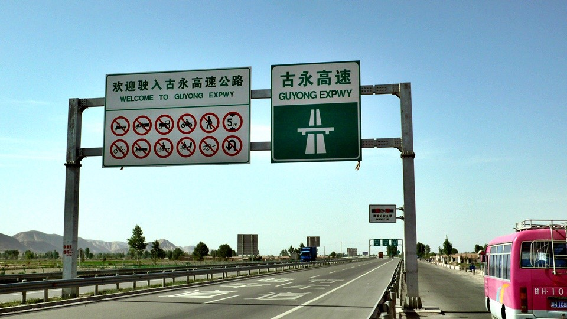
筆直的道路通往武威，有一點些許無聊的氣氛開始蔓延，關掉大腦騎車，時間過得比較快。
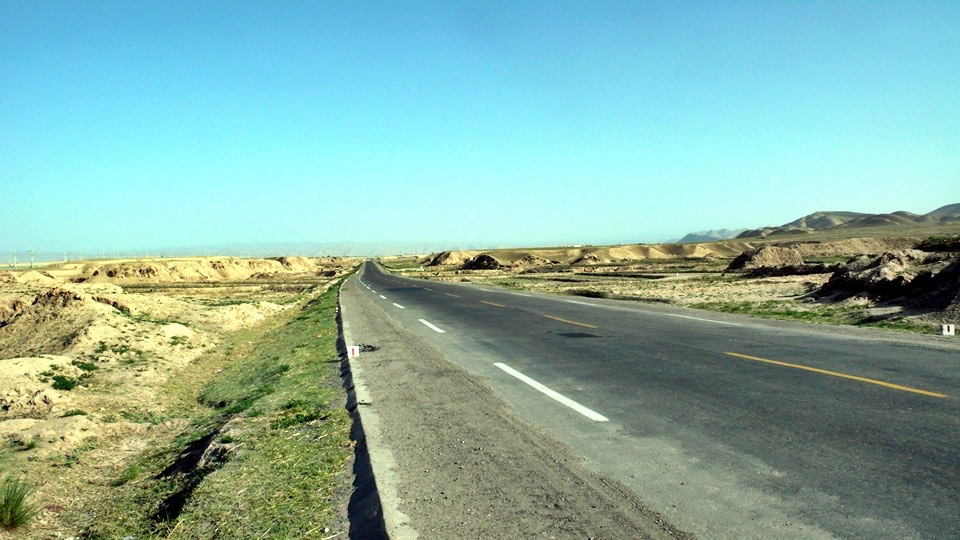
等我回過神來的時候，里程表已經超過一百七十公里，累當然是不在話下，但令人欣慰的是武威終於快到了。
在進入武威之前吃今天最後一輪的冰棒，一樣是五毛錢，可是卻能買兩隻，那一塊錢就買了四隻冰棒。
分一支給老闆娘的兒子吃，你一定很辛酸吧，雖然自己家在賣冰棒，可是自己卻不能想吃就吃，
來～大哥哥請你吃，不用客氣。
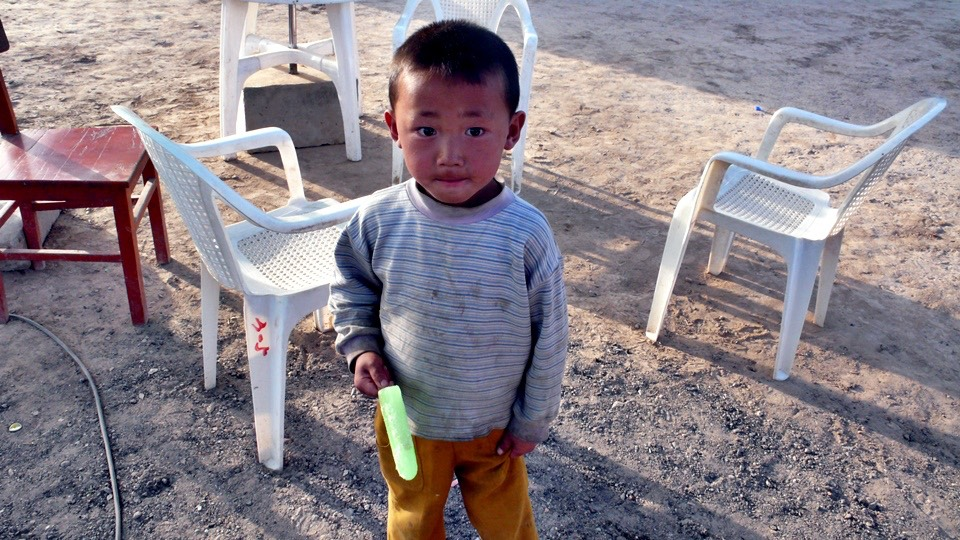
武威在很久以前，是靠著雪水融化而形成的綠洲城市。
過了這麼多年，這綠洲城市當然已經徹底的消失了，剩下的就是一座諾大的城市，用高科技樹立在乾旱之中。
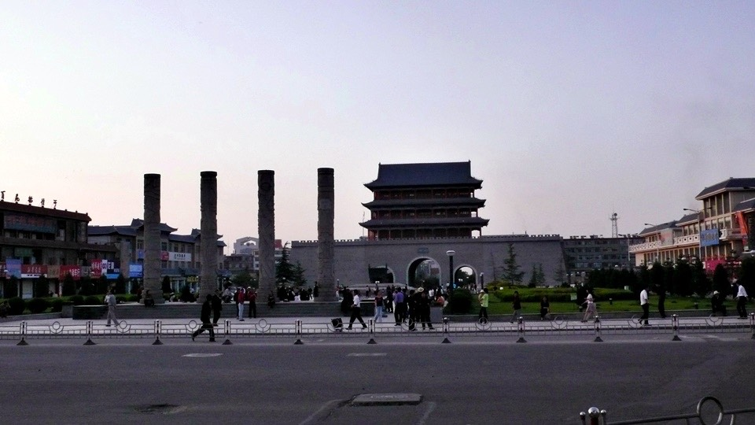
騎到這邊已經八點多，天空雖然還很亮，但我的心已經是夜晚了。
我想找一個舒服的床好好睡一覺，騎著小多滑行在街頭問旅館。
由於登記處大多設在二樓的緣故，我都必須將小多停在一樓，然後很快的跑上去問多少錢？
然後衡量要不要住，接著很快的再跑下來小多這裡，雖然不太可能一瞬間就被偷走，
可是單車不在身邊那種感覺真是很令人擔憂。
被別間客滿旅館的保安人員介紹一間旅館，這邊是很正式的旅館，和之前住在別人家的空房間不一樣。
雖然專業又高級，但房價倒是蠻便宜的，選一間雙人房，一床18元的房間，
一開始櫃台小姐說我這樣要付兩張床的錢，也就是36塊，
可是我只睡一張床，為什麼要付兩張床的錢，盧了一下之後，櫃台也只能嚇嚇我說，這樣會有人跟我同住喔！
沒有在怕的，要是你找得到房客的話就儘管來吧。
結果今天到入睡深夜，都只有我一個人睡這一間，雖然是意料中事，但還是很爽省下了一半的房價。
旅館出去就是市場，餐廳林立，每一間都飄著好香的食物味道。
我點了一份天津的大肉水餃，一份四塊，有26顆，而且是湯餃，很好吃。
光吃湯餃有點寂寞，又在別間店點了一盤回鍋肉來過過癮。
搭配一瓶冰得恰到好處的西涼啤酒，看著這些食物，心裡覺得好幸福，都是自己喜歡吃的東西，而且都很便宜。
今天爬高山和騎那麼遠的疲憊感，隨著可口的食物吃下肚子，完全拋在九霄雲外，只剩下滿足的笑容。
繼續閱讀：5.18 攝氏37度C
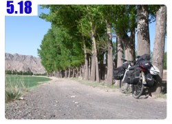
中國-人民幣－ 1：4.3 台幣
5.17
總計：48元
雜貨店大餅兩個1元、熱狗三隻3元、一毛餅乾二十個2元、冰棒六隻3元、午餐羊肉麵片6元、晚餐大肉水餃4元、回鍋肉8元、西涼啤酒3元、住店18元